Fine jewelry
- Type
- Campaign imagery
- Role
- Art direction and AI image generation
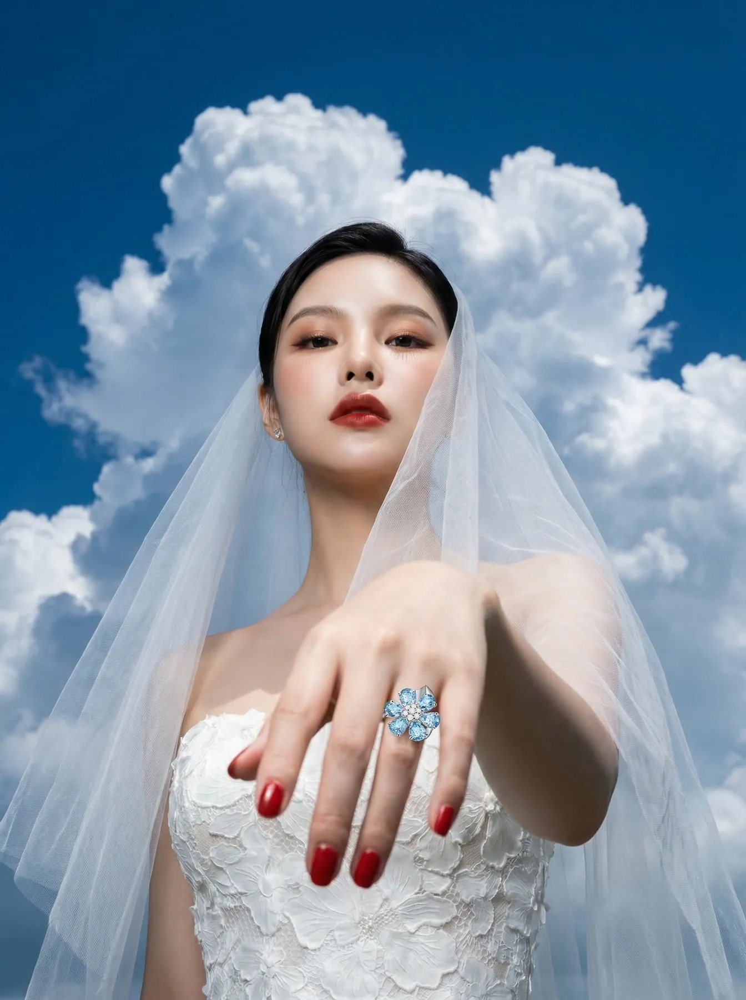
Jewelry is the hardest test for generated imagery. Stones have to refract, metal has to reflect and hands have to look like hands. Four collections, each with its own cast and world.
Aquamarine flower ring
Bridal veils, a hyacinth macaw and red ribbon. The same six-petal ring in every frame.
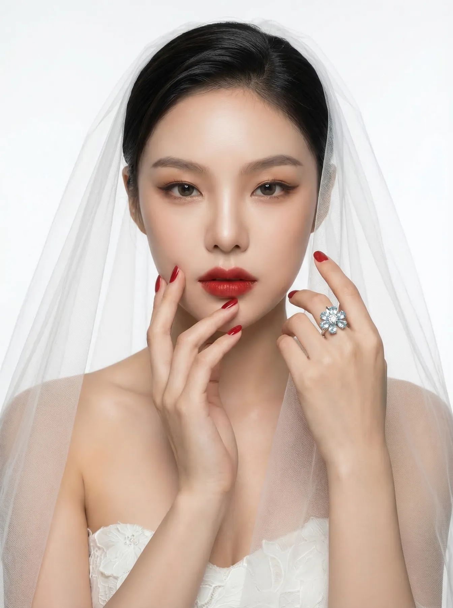

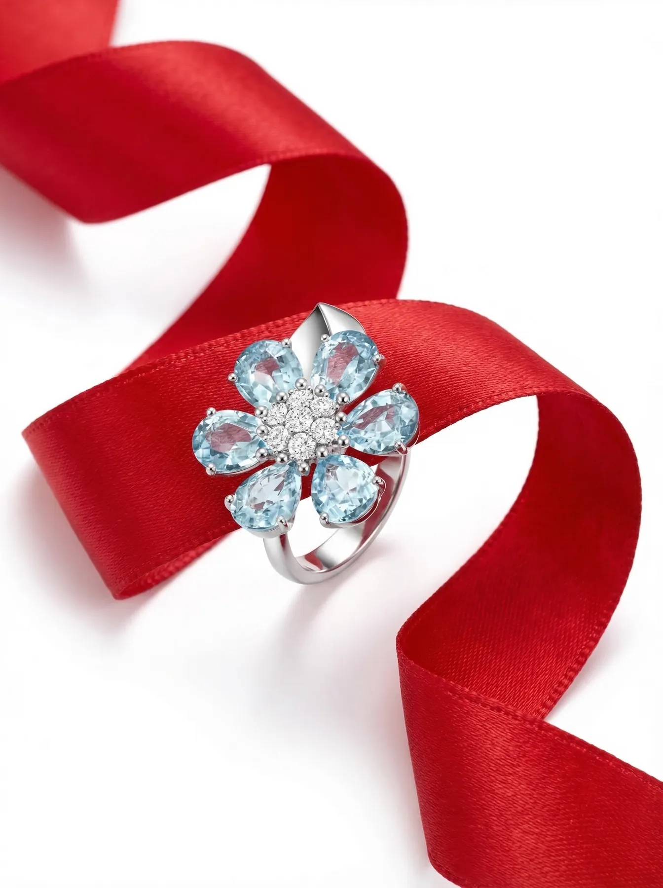
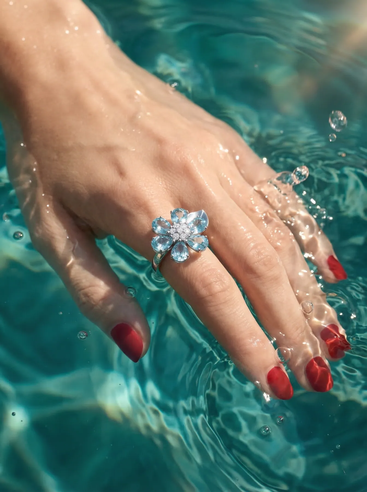
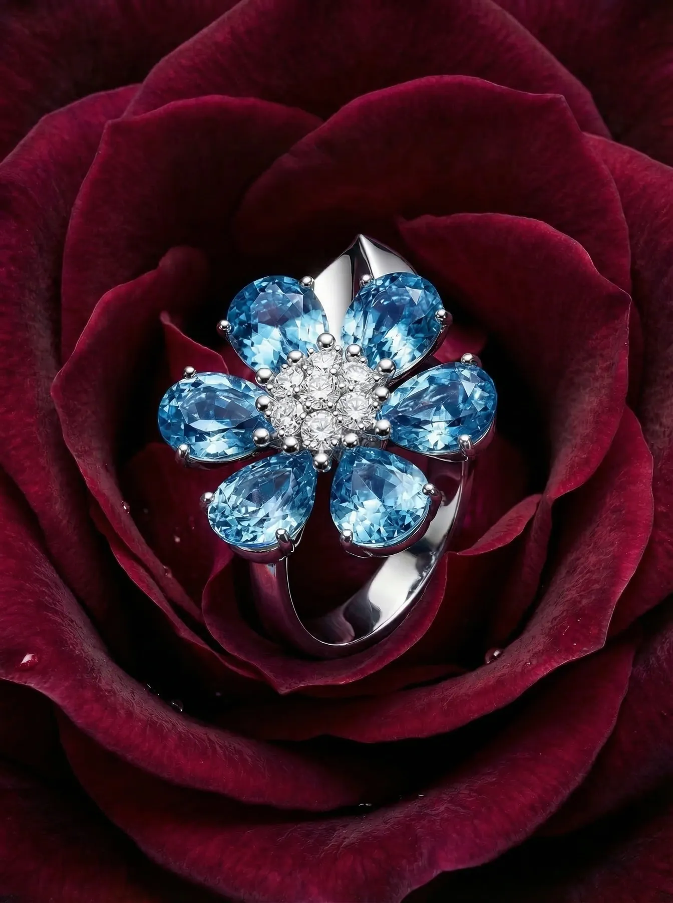
MEREKI engraved band
One engraved band in gold, silver and rose gold, worn across four casts, from wireframe to finished campaign.
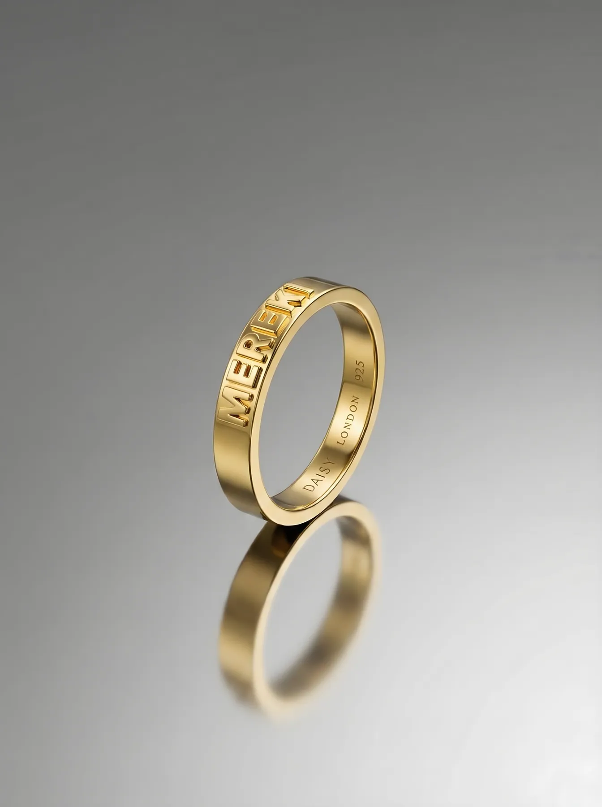
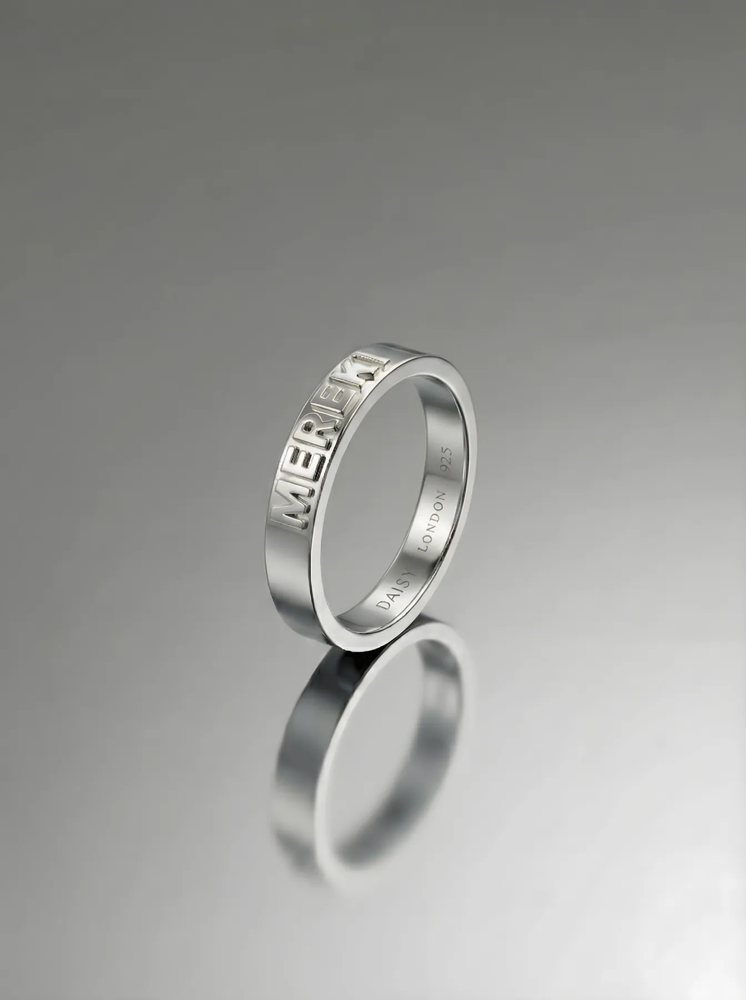
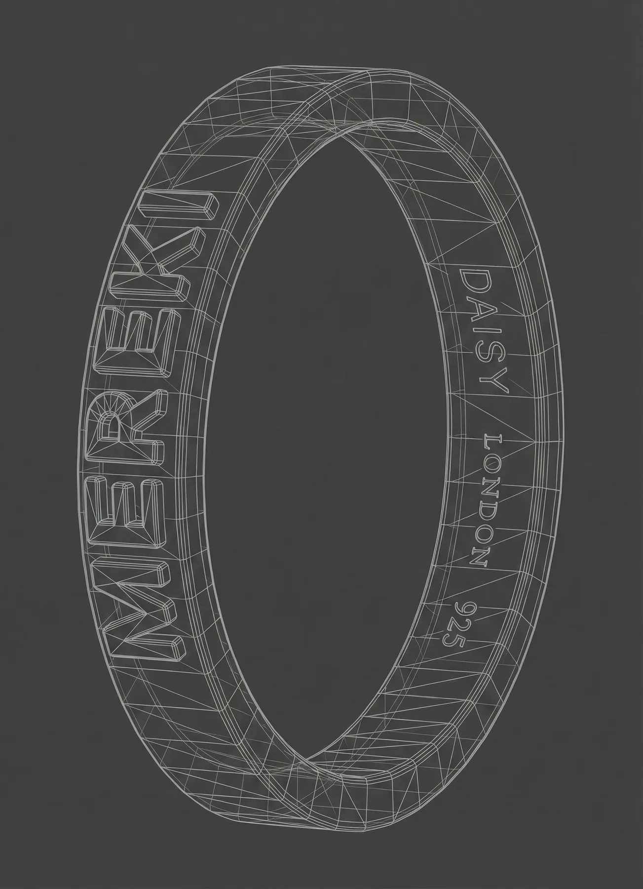
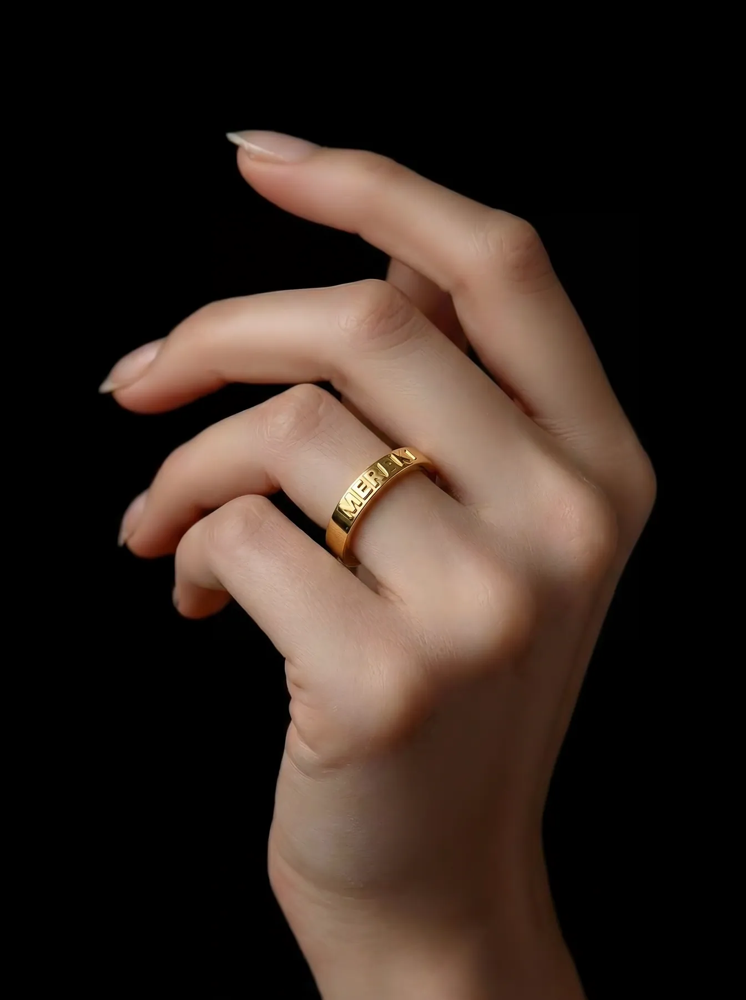
Solitaire
A single diamond on velvet, rope, a rose and a calla lily, then on the hand.
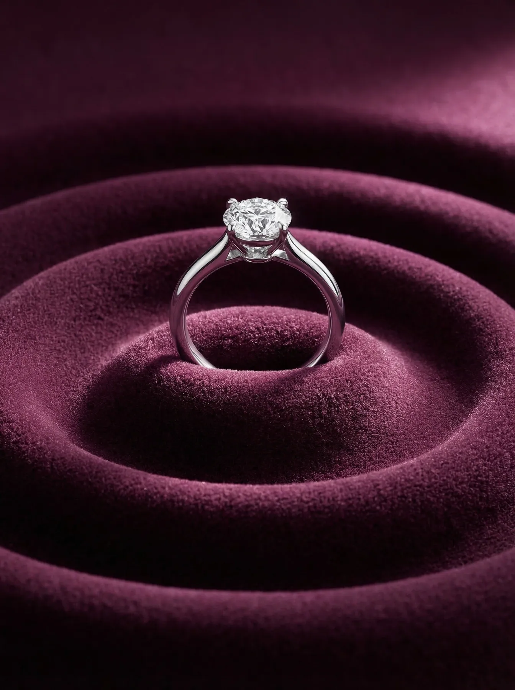
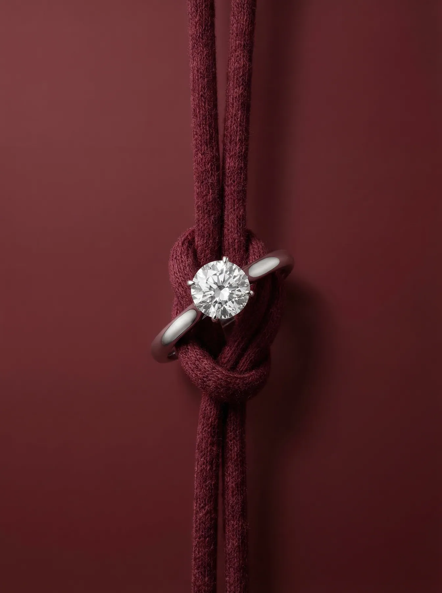
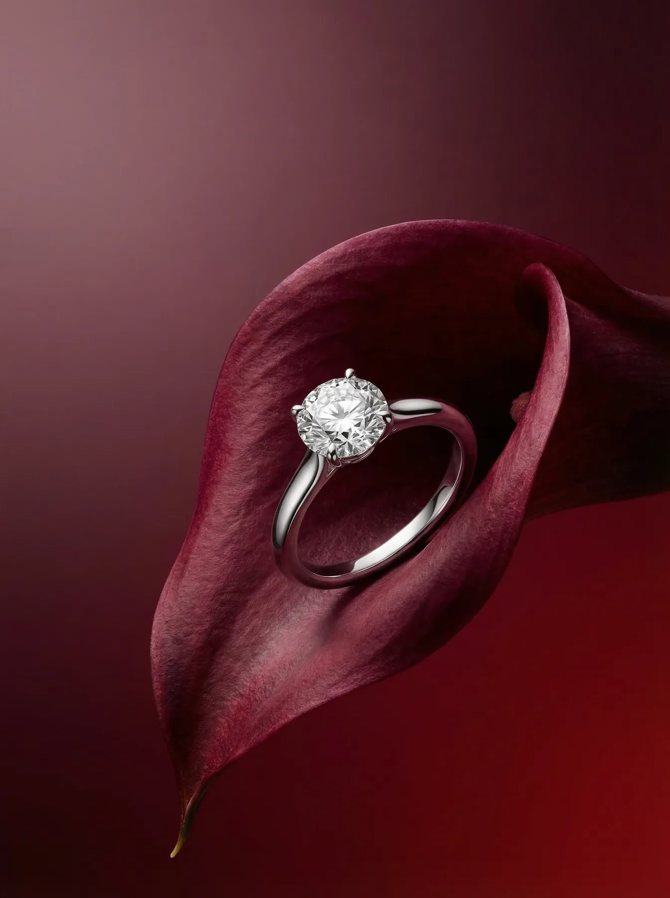
Diamond rivière
Silver hair, a fur collar, and the necklace doing all the talking.
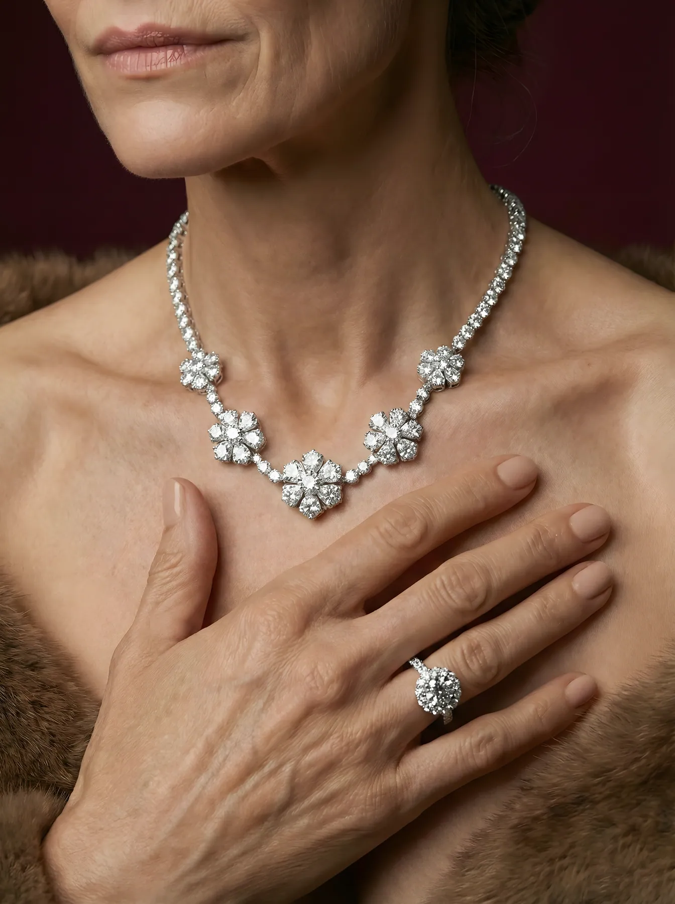